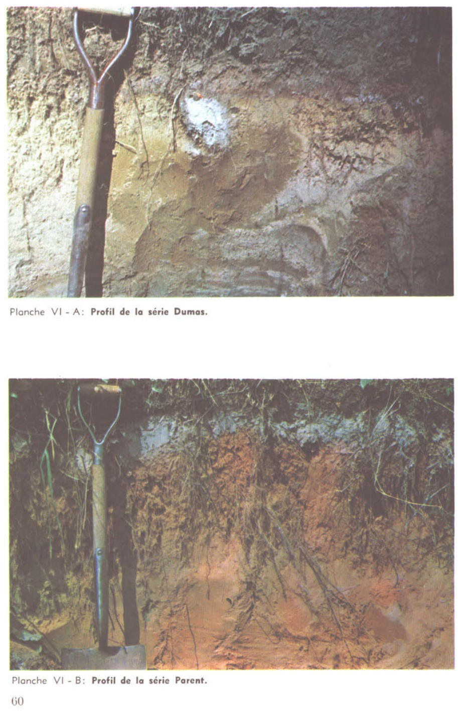

Identification & Caractéristiques Générales
La série Dumas se développe sur un matériau parental meuble à texture de loam sableux plus ou moins fin, constitué d'un recouvrement meuble épais (> 80 cm) reposant sur du gravier ou un till de fond, ou associé à des zones d'épandage fluvio-glaciaire. Ce dépôt meuble façonne un relief caractérisé par des bombements topographiques, allant de microreliefs faibles à des paysages montagneux aux pentes variant de douces à fortes (6 à 30 %), particulièrement représentés sur la Côte-de-Beaupré, dans la vallée de la Jacques-Cartier ainsi que dans les régions de Charlevoix et du Saguenay–Lac-Saint-Jean.
Le profil pédologique présente un drainage naturel bon à rapide, une perméabilité moyenne à bonne et un ruissellement généralement lent, bien que la dynamique hydropédologique puisse induire des variations locales de perméabilité. Le profil morphologique montre des horizons A, B et C souvent diffus ou tronqués, comprenant des expressions podzoliques (horizon Bf) ou brunisoliques (horizon Bm), parfois caractérisées par un léger gleyfication (g). Le profil se distingue par une réaction fortement acide (pH inférieur à 6,0), une pierrosité nulle à occasionnelle dans le solum, ainsi que par la présence fréquente de lits de magnétite à la base du profil, de concrétions ferrugineuses (Bfcc) et de tendances locales à l'ortsteinisation menant à la formation d'un horizon durci (Bfc).
Sur le plan agronomique, les sols de la série Dumas constituent des milieux naturellement pauvres, principalement mis en valeur pour la production de cultures fourragères et de céréales. Les limitations majeures à la production résident dans l'acidité marquée du complexe absorbant, la pauvreté inhérente en bases échangeables et les risques de dégradation de la couche de labour. La mise en culture de ces sols requiert une gestion rigoureuse de la fertilisation minérale et organique, un chaulage régulier pour corriger le pH, ainsi qu'une attention particulière portée au travail du sol afin de préserver la structure de l'horizon de surface et de mitiger les risques d'érosion sur les secteurs en forte pente.
Caractères Distinctifs & Morphologie Génétique (Comté de Chicoutimi — Page 78)
- Topographie : légèrement ondulée à horizontale
- Drainage : bon à imparfait
- Grand-groupe génétique : podzol
- Degré d'érosion : léger à modéré (D1-D2)
- Classe d'utilisation : 3
- Association géographique : séries Sagard, Fortin, Houde
- Végétation naturelle : bouleaux, merisiers, sapins, épinettes, trembles, érables, coudriers; framboisiers, fougères à l'aigle, etc.
Classification Taxonomique & Environnement Pédologique
| Ordre Pédologique | Podzolique |
|---|---|
| Grand Groupe (SCSS) | Podzol humo-ferrique |
| Sous-Groupe Taxonomique | Podzol humo-ferrique orthique |
| Famille Pédologique | Loameuse-grossière, mixte sableux, acide |
| Mode de Dépôt Parental | Fluviatile |
| Classe de Drainage Naturel | Modérément bien drainé |
| Régime Thermique & Humidité | Frais / Humide |
Description Morphologique du Profil Type
Séquences génétiques des horizons pédologiques caractérisant le profil type représentatif de la série Dumas :
Profil cultivé (agricole) — Comté de Charlevoix
✓ Source : Comté de Charlevoix — Page 41Couleur Munsell : 10YR 4/4
Structure & Consistance : Polyédrique à granulaire
Description morphologique : Loam sableux fin brun-jaune foncé (10 YR 4/4-3/4 h); particulaire; très friable; racines abondantes, limite abrupte, régulière; moyennement acide.
Couleur Munsell : 10YR 7/2
Structure & Consistance : Polyédrique à granulaire
Description morphologique : Loam sableux fin gris clair (10 YR 7/2 h); particulaire; meuble; limite abrupte, interrompue.
Couleur Munsell : 5YR 5/8
Structure & Consistance : Polyédrique à granulaire
Description morphologique : Loam sableux fin rouge-jaune (5 YR 5/8-4/8 h); particulaire; meuble; cimentation faible; discontinue; limite distincte, ondulée; moyennement acide.
Couleur Munsell : 10YR 5/6
Structure & Consistance : Polyédrique à granulaire
Description morphologique : Loam sableux brun-jaune (10 YR 5/6-5/8 h); particulaire; meuble; limite distincte, régulière; moyennement acide.
Couleur Munsell : 10YR 7/4
Structure & Consistance : Polyédrique à granulaire
Description morphologique : Loam sableux très fin brun très pâle (10 YR 7/4 h); particulaire; meuble; cimentation faible; discontinue; lits horizontaux de magnétite; faiblement acide.
Profil forestier / boisé — Comté de Chicoutimi
✓ Source : Comté de Chicoutimi — Page 79Couleur Munsell : 10YR 2/2, 2.5YR 2/0
Structure & Consistance : Polyédrique à granulaire
Description morphologique : Matière organique plus ou moins décomposée, rouge très foncé à noir (10YR 2/2-2.5YR 2/0); horizon irrégulier; pH : 4.2.
Couleur Munsell : 5YR 6/1
Structure & Consistance : Polyédrique à granulaire
Description morphologique : Loam sableux gris à gris rose (5YR 6/1-6/2); horizon irrégulier (en poches); cet horizon est parfois difficilement apparent; pH : 4.7.
Couleur Munsell : 5YR 3/4
Structure & Consistance : Polyédrique à granulaire
Description morphologique : Loam sableux brun rouge foncé (5YR 3/4 à 2/2).
Couleur Munsell : 10YR 5/6
Structure & Consistance : Polyédrique à granulaire
Description morphologique : Loam sableux brun jaune (10YR 5/6); faible tendance à s'ortseiniser; pH : 5.6.
Couleur Munsell : 2.5Y 5/4
Structure & Consistance : Polyédrique à granulaire
Description morphologique : Loam sableux très fin brun olive clair (2.5Y 5/4); poudreux à l'état sec; pH : 5.7.
Couleur Munsell : 5Y 5/3
Structure & Consistance : Polyédrique à granulaire
Description morphologique : Loam sableux très fin olive (5Y 5/3); lits horizontaux de magnétite (noir); pH : 6.2.
Couleur Munsell : 10YR 6/3
Structure & Consistance : Polyédrique à granulaire
Description morphologique : Sable brun pâle (10YR 6/3); principalement constitué de grains de quartz, d'orthose et de magnétite; pH : 6.0.
Profil forestier (sous boisé) — Les terres cultivées de la MRC d
✓ Source : Les terres cultivées de la MRC d — Page 58Couleur Munsell : 7.5YR 4/3, 2.5Y 5/8
Structure & Consistance : Polyédrique à granulaire
Description morphologique : Loam sableux très fin; brun (7.5 YR 4/3 h), brun olive clair (2.5 Y 5/8 s); granulaire, fine à moyenne, faible; meuble; racines très abondantes, toutes les gros-seurs; limite abrupte, ondulée; épaisseur de 8 à 15 cm; fortement acide.
Couleur Munsell : 7.5YR 6/2, 10YR 7/1
Structure & Consistance : Polyédrique à granulaire
Description morphologique : Loam sableux très fin; gris rosâtre (7.5 YR 6/2 h), gris clair (10 YR 7/1 s); granulaire, fine, très faible; meuble; racines très abondantes, toutes les grossiers; limite abrupte, interrompue; épaisseur de 0 à 10 cm; fortement acide.
Couleur Munsell : 5YR 3/3, 10YR 5/4
Structure & Consistance : Polyédrique à granulaire
Description morphologique : Sable fin et loameux; brun rouge foncé (5 YR 3/3 h), brun jaune (10 YR 5/4 s); sans structure; très friable à très ferme (concrétions); racines très abondantes, toutes les gros-seurs; concrétions, fer- manganèse, assez nombreuses, fines et moyennes; limite abrupte, irrégulière; épaisseur de 0 à 23 cm; fortement acide.
Couleur Munsell : 2.5Y 5/4, 2.5Y 6/4
Structure & Consistance : Polyédrique à granulaire
Description morphologique : Sable fin et loameux; brun olive clair (2.5 Y 5/4 h), brun jaune clair (2.5 Y 6/4 s); sans structure; très friable; racines abondantes, toutes les grossiers; limite nette, ondulée; épaisseur de 15 à 45 cm; fortement acide.
Couleur Munsell : 2.5Y 5/3, 2.5Y 6.5/3
Structure & Consistance : Polyédrique à granulaire
Description morphologique : Sable fin; brun olive clair (2.5 Y 5/3 h) brun jaune clair à jaune pâle (2.5 Y 6.5/3 s); sans structure, motteuse; friable à ferme (concrétions); très peu de racines, toutes les grossiers; concrétions, fer-manganèse, nombreuses, moyennes et grossières; modérément acide.
Profil forestier (sous boisé) — Comté de Québec
✓ Source : Comté de Québec — Page 37Couleur Munsell : 7.5YR 4/3, 2.5Y 5/8
Structure & Consistance : Polyédrique à granulaire
Description morphologique : Loam sableux très fin; brun (7.5 YR 4/3 h), brun olive clair (2.5 Y 5/8 s); granulaire, fine à moyenne, faible; meuble; racines très abondantes, toutes les grossueurs; limite abrupte, ondulée; épaisseur de 8 à 15 cm; fortement acide.
Couleur Munsell : 7.5YR 6/2, 10YR 7/1
Structure & Consistance : Polyédrique à granulaire
Description morphologique : Loam sableux très fin; gris rosâtre (7.5 YR 6/2 h), gris clair (10 YR 7/1 s); granulaire, fine, très faible; meuble; racines très abondantes, toutes les grossueurs; limite abrupte, interrompue; épaisseur de 0 à 10 cm; fortement acide.
Couleur Munsell : 5YR 3/3, 10YR 5/4
Structure & Consistance : Polyédrique à granulaire
Description morphologique : Sable fin et loameux; brun rouge foncé (5 YR 3/3 h), brun jaune (10 YR 5/4 s); sans structure; très friable à très ferme (concrétions); racines très abondantes, toutes les grossueurs; concrétions, fer-manganèse, assez nombreuses, fines et moyennes; limite abrupte, irrégulière; épaisseur de 0 à 23 cm; fortement acide.
Couleur Munsell : 2.5Y 5/4, 2.5Y 6/4
Structure & Consistance : Polyédrique à granulaire
Description morphologique : Sable fin et loameux; brun olive clair (2.5 Y 5/4 h), brun jaune clair (2.5 Y 6/4 s); sans structure; très friable; racines abondantes, toutes les grossueurs; limite nette, ondulée; épaisseur de 15 à 45 cm; fortement acide.
Couleur Munsell : 2.5Y 5/3, 2.5Y 6.5/3
Structure & Consistance : Polyédrique à granulaire
Description morphologique : Sable fin; brun olive clair (2.5 Y 5/3 h) brun jaune clair à jaune pâle (2.5 Y 6.5/3 s); sans structure; motteuse; friable à ferme (concrétions); très peu de racines, toutes les grossueurs; concrétions, fer-manganèse, nombreuses, moyennes et grossières; modérément acide.
Profils Photographiques & Planches de Terrain
Documents iconographiques, figures pédologiques et coupes de terrain documentées dans les mémoires d'inventaire pour de la série Dumas :

Propriétés Physico-Chimiques & Analyses de Laboratoire
| Horizon | Prof. (pces/cm) | Sable % | Limon % | Argile % | pH | C % | N % | Ca éch. | Mg éch. | K éch. | H+ éch. | Bases tot. | C.E.C. (meq/100g) | Saturation % |
|---|---|---|---|---|---|---|---|---|---|---|---|---|---|---|
| L-H | 2-8/5-20.3 | - | - | - | 4.2 | 32.78 | 1.12 | 14.8 | 1.6 | 0.31 | 112.0 | 16.71 | 128.71 | 12.9 |
| Ae | 1-1½/2.5-3.8 | 42.2 | 50.4 | 7.4 | 4.7 | 0.83 | 0.05 | 0.80 | 0.6 | 0.01 | 6.0 | 1.41 | 7.41 | 19.0 |
| Bf1 | 3-5/7.5-12.5 | 54.2 | 42.4 | 3.4 | 5.6 | 1.50 | 0.07 | 0.60 | 0.6 | 0.01 | 4.0 | 1.21 | 5.21 | 23.2 |
| Bf2 | 5/8-12.5-20.3 | 52.2 | 42.4 | 5.4 | 5.7 | 0.58 | 0.03 | 0.30 | 0.5 | 0.01 | 3.0 | 0.81 | 3.81 | 21.2 |
| C | à ±18/45.7 | 62.1 | 35.2 | 2.7 | 6.2 | 0.28 | 0.01 | 0.10 | 0.43 | 0.01 | 1.0 | 0.54 | 1.54 | 35.0 |
| D | à 48/à 122 | 97.1 | 1.5 | 1.4 | 6.0 | 0.25 | 0.01 | 0.10 | 0.40 | 0.01 | 1.0 | 0.51 | 1.51 | 33.7 |
Particularités Régionales, Phases & Variantes Pédologiques
Déclinaisons régionales, faciès texturaux, phases d'érosion ou de pierrosité et variantes cartographiées par étude pour de la série Dumas :
| Étude Régionale | Symbole | Appellation / Phase / Variante | Différenciation avec la série type (Analyse pédologique) |
|---|---|---|---|
| Comté de Charlevoix | Du |
Dumas loam sableux fin | Modalité modale de référence (type de base de la série). |
| Comté de Chicoutimi | Du |
Dumas loam sableux | Conforme à la série type de référence (caractéristiques texturales et drainage identiques). |
| MRC de la Côte-de-Beaupré | DU |
Dumas loam sableux à sable | Conforme à la série type de référence (caractéristiques texturales et drainage identiques). |
DU-m |
Dumas loam sableux à sable à drainage déviant | Conforme à la série type de référence (caractéristiques texturales et drainage identiques). | |
DU-t |
Dumas loam sableux à sable sur till | Phase peu profonde sur till. | |
| Comté de Québec | DU |
Dumas loam sableux à sable | Conforme à la série type de référence (caractéristiques texturales et drainage identiques). |
DU-d |
Dumas loam sableux à sable avec discordance dans le matériau ou dans le profil | Conforme à la série type de référence (caractéristiques texturales et drainage identiques). | |
| Les terres cultivées de la MRC d | DUM |
Dumas | Conforme à la série type de référence (caractéristiques texturales et drainage identiques). |
Distribution Pédo-Paysagère & Représentativité Cartographique (Couverture PPS 2026)
- Éternité loam sableux graveleux (ETI) — co-occurrente dans 70 polygone(s)
- Sagard sable loameux (SGD) — co-occurrente dans 30 polygone(s)
- Dallaire loam (DLI) — co-occurrente dans 20 polygone(s)
Aptitudes Agronomiques, Hydropédologie & Conservation des Sols
Indicateurs Hydropédologiques & Vulnérabilité à l'Érosion (BDHP 2026)
Interprétation BDHP : Potentiel de ruissellement modérément élevé. Faible taux d'infiltration, présence d'horizons ralentissant le drainage descendant.
Classement selon l'Inventaire des Terres du Canada (ITC / CLI) : Classe 1.
- Potentiel agricole : Terroir adapté aux cultures régionales selon la texture dominante et la régie de drainage.
- Contraintes majeures : Modérément bien drainé. Risque d'engorgement temporaire ou d'excès d'eau printanier.
- Gestion & Aménagement : Drainage souterrain ou superficiel préconisé sur les terres planes. Chaulage et apport organique régulier selon les bilans agronomiques.
- Cultures adaptées : Grandes cultures (maïs, soya, céréales), prairies fourragères et cultures maraîchères selon le contexte géomorphologique.